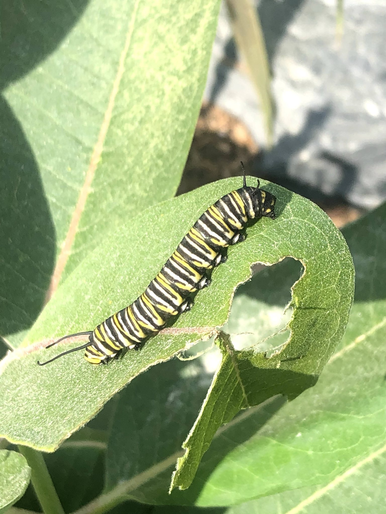

March 2021
Host Plants for Butterflies and Moths
Butterflies and moths need specific plants as caterpillars, these “host” plants are necessary for survival. The monarch has helped to illuminate this pressing issue, as it is necessary to have milkweed for their continued survival. Unfortunately, the issue of host plants extends to so many of our favorite, local butterflies and moths. We may love to see adult butterflies at our “introduced” perennials and annuals, however host plants are integral to the creating caterpillar populations that become those beautiful creatures. Another important factor here is that caterpillar populations feed our favorite birds. A clutch of birds generally requires between 5,000 – 6,000 (yes, that many) caterpillars! How many caterpillars do you see in your yard each year?

When creating a backyard habitat for pollinators, we must look to the plants that provide the right sustenance. In addition to specialized food sources, caterpillars often overwinter in various stages, so leaf cover and dead trees become safe havens.
Many of the plants that sustain butterfly and moth populations are trees. There are, however, a number of herbaceous perennials and smaller shrubs that host these essential insects. Thanks to the great work of the National Wildlife Fund, I’ve been able to put together this quick list of host plants for butterflies and moths specific my area in Northern Vermont.
While the following information is specific information for Northern Vermont, zone 5, this may also be helpful for plants in your neck of the woods. To discover information specific to your area, check out this incredibly helpful tool from NWF.
Each butterfly or moth below is followed by the native host plants that feed its caterpillars.
Monarch Butterfly
Milkweed, Butterfly Weed (Asclepias)
Spicebush Swallowtail
Spicebush (Lindera)
Eastern Tailed-Blue
Pine (pinus); Deer vetch, trefoil; Lupine; Vetch; Milkvetch
Coral Hairstreak
Canadian plum; Chokeberry; Pin Cherry; Sesquehana sandcherry (Prunus family)
Mourning Cloak Butterfly
Willow; Birch; Aspen, cottonwood, poplar; Maple, boxelder; Alder
Great Leopard Moth
Willow; Oak; Locust, black locust, rose acacia; Sunflower; Honeysuckle; Violet; Spurge, snow on the mountain
Green Comma
Willow; Birch; Aspen, cottonwood, poplar; Cranberry, blueberry; Alder; Rhododendron, azalea
Clouded Sulphur
Pine; Lupine; Vetch; Milkvetch; Deer vetch, trefoil; Locust, black locust
Silvery Blue
Pine; Deer vetch, trefoil; Lupine; Vetch; Milkvetch
Eastern Tiger Swallowtail
Willow; Beach plum, chokecherry, pin cherry; Birch; Oak; Aspen, cottonwood, poplar; Crabapple, apple; Pine; Hickory; Hawthorn; Basswood; Ash; Serviceberry
More resources:
Top Ten list of Wildlife Plants — a list of trees, shrubs, and herbaceous perennials for the eastern U.S.
Planting for Pollinators — Jan Sorensen’s pollinator garden recommendations.
Filed in the garden journal · March 2021